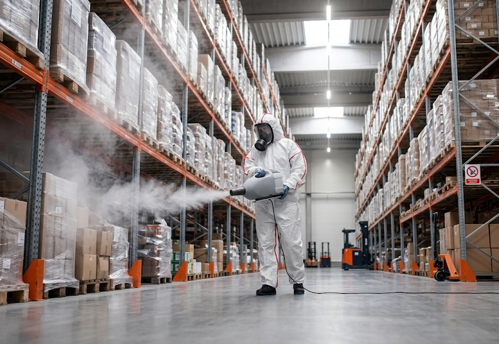
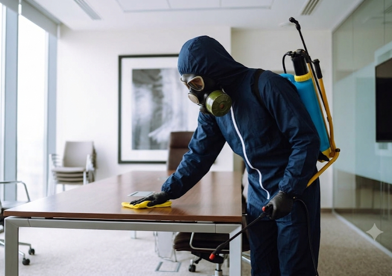
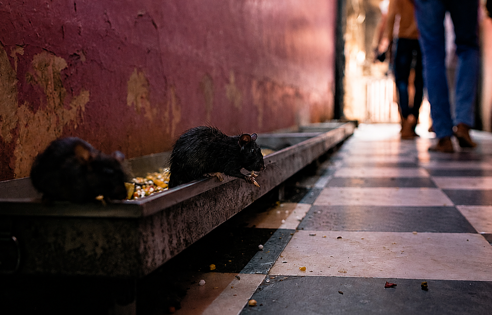
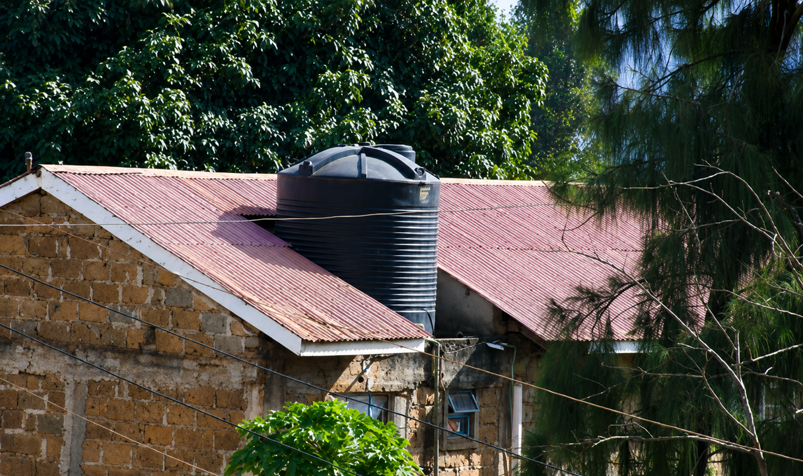
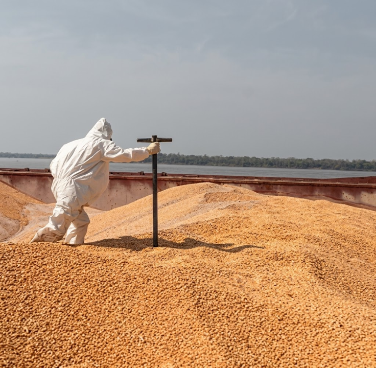

Desinsectación Integral (Control de Insectos)
Nos encargamos de la eliminación y el control de plagas voladoras y rastreras (cucarachas, hormigas, moscas, zancudos). Implementamos un plan de Manejo Integrado de Plagas (MIP) usando gel, pulverización o termofumigación de acuerdo con el giro de tu empresa.
- Espacios libres de vectores transmisores de enfermedades.
- Uso de insecticidas de baja toxicidad y sin aroma molesto.
- Emisión del Certificado Sanitario exigido por las Municipalidades y MINSA.

Desinfección Ambiental
Eliminación de microorganismos patógenos (virus, bacterias y hongos) suspendidos en el aire o alojados en superficies de alto contacto. Esencial para clínicas, colegios, oficinas y call centers donde la recirculación de aire requiere bioseguridad absoluta.
- Reducción drástica del ausentismo laboral por contagios.
- Aplicación homogénea mediante sistemas de amonio cuaternario o nebulización.
- Seguro para superficies electrónicas y mobiliario de oficina.

Desratización (Control de Roedores)
Protegemos tus almacenes y perámetros contra ratas y ratones mediante cordones sanitarios de seguridad. Utilizamos cebaderos herméticos con llaves de seguridad, evitando que el producto quede expuesto a personas o mascotas.
- Prevención de daños en cableados, empaques y estructuras comerciales.
- Monitoreo y mapeo constante de puntos calientes de plaga.
- Dispositivos discretos y fijados de forma segura en tus perámetros.

Limpieza y Desinfección de Reservorios de Agua
Realizamos el lavado, remoción de lodos y desinfección de cisternas y tanques elevados de agua potable. Garantizamos la potabilidad del recurso bajo los lineamientos obligatorios de DIGESA (Mantenimiento semestral obligatorio).
- Agua limpia, libre de parásitos, algas sedimentadas y microorganismos.
- Personal con capacitaciones en espacios confinados y examenes médicos de ley.
- Entrega del certificado de operatividad válido por 6 meses.

Fumigación con Fosfamina (Tratamiento de granos en Almacenes)
Tratamientos especiales de gascificación profunda para el control de plagas en productos almacenados, silos y pallets de madera (gorgojos, polillas, barrenadores). Indispensable para industrias molineras, de granos y agroexportación.
- Penetración total en empaques cerrados sin dejar residuos tóxicos posteriores.
- Protección absoluta de lotes de inventario de gran valor.
- Cumplimiento de estándares internacionales de exportación.
Sistemas de Control Aviar
Implementación de barreras físicas disuasorias para mitigar el posamiento y anidamiento de palomas en fachadas, techos e instalaciones comerciales, resguardando la infraestructura y la salud.
- Erradicación del daño corrosivo que causa el excremento de aves.
- Métodos ecológicos que no dañan ni exterminan a las especies.
- Reducción de riesgos por ácaros y hongos transportados por las aves.